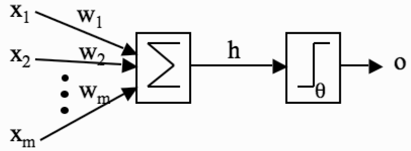
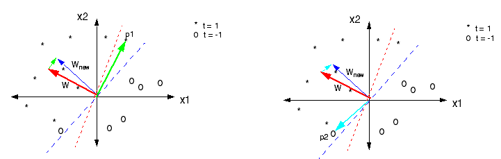
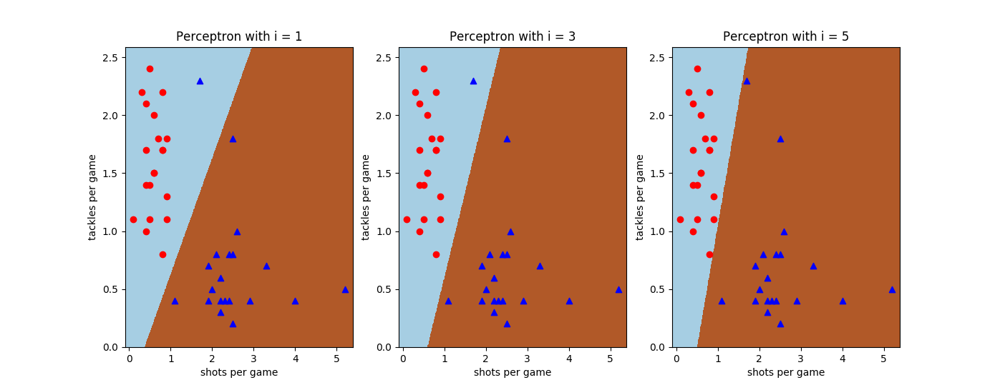
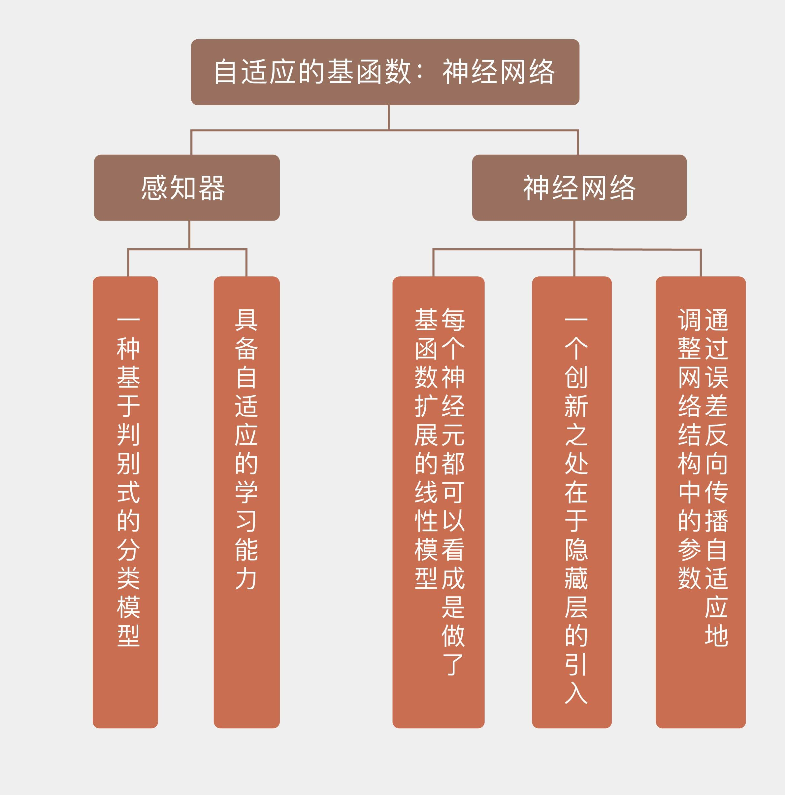

- 00 开篇词 打通修炼机器学习的任督二脉.md.html
- 01 频率视角下的机器学习.md.html
- 02 贝叶斯视角下的机器学习.md.html
- 03 学什么与怎么学.md.html
- 04 计算学习理论.md.html
- 05 模型的分类方式.md.html
- 06 模型的设计准则.md.html
- 07 模型的验证方法.md.html
- 08 模型的评估指标.md.html
- 09 实验设计.md.html
- 10 特征预处理.md.html
- 11 基础线性回归：一元与多元.md.html
- 12 正则化处理：收缩方法与边际化.md.html
- 13 线性降维：主成分的使用.md.html
- 14 非线性降维：流形学习.md.html
- 15 从回归到分类：联系函数与降维.md.html
- 16 建模非正态分布：广义线性模型.md.html
- 17 几何角度看分类：支持向量机.md.html
- 18 从全局到局部：核技巧.md.html
- 19 非参数化的局部模型：K近邻.md.html
- 20 基于距离的学习：聚类与度量学习.md.html
- 21 基函数扩展：属性的非线性化.md.html
- 22 自适应的基函数：神经网络.md.html
- 23 层次化的神经网络：深度学习.md.html
- 24 深度编解码：表示学习.md.html
- 25 基于特征的区域划分：树模型.md.html
- 26 集成化处理：Boosting与Bagging.md.html
- 27 万能模型：梯度提升与随机森林.md.html
- 28 最简单的概率图：朴素贝叶斯.md.html
- 29 有向图模型：贝叶斯网络.md.html
- 30 无向图模型：马尔可夫随机场.md.html
- 31 建模连续分布：高斯网络.md.html
- 32 从有限到无限：高斯过程.md.html
- 33 序列化建模：隐马尔可夫模型.md.html
- 34 连续序列化模型：线性动态系统.md.html
- 35 精确推断：变量消除及其拓展.md.html
- 36 确定近似推断：变分贝叶斯.md.html
- 37 随机近似推断：MCMC.md.html
- 38 完备数据下的参数学习：有向图与无向图.md.html
- 39 隐变量下的参数学习：EM方法与混合模型.md.html
- 40 结构学习：基于约束与基于评分.md.html
- 如何成为机器学习工程师？.md.html
- 总结课 机器学习的模型体系.md.html
- 总结课 贝叶斯学习的模型体系.md.html
- 结课 终有一天，你将为今天的付出骄傲.md.html
- 捐赠
22 自适应的基函数：神经网络
回眸人工神经网络的前半生，不由得让人唏嘘造化弄人。出道即巅峰的它经历了短暂的辉煌之后便以惊人的速度陨落，几乎沦落到人人喊打的境地。可谁曾想三十年河东三十年河西，一位天才的出现让神经网络起死回生，众人的态度也迅速从避之不及变成趋之若鹜。如果人工神经网络果真有一天如人所愿实现了智能，不知它会对自己的命运作何评价。
人工神经网络（artificial neural network）是对生物神经网络的模拟，意在通过结构的复制实现功能的复制。但人类神经系统在百万年进化中留下的智能密码并没有那么容易破解，因而神经网络最终也难以跳出统计模型的窠臼，成为线性模型大家族的又一位成员。

感知器示意图（图片来自Machine Learning: an Algorithmic Perspective, 图3.1）
人工神经网络的祖师爷是感知器（perceptron），其作用是根据输入数据的属性对它进行二分类。当偏置\(b = 0\)时，感知器计算输入属性的线性组合\(w_1x_1 + \\cdots + w_nx_n\)，所有参数\(w_i\)共通构成分类边界的法向量\({\\bf w}\)。求出的线性组合接下来被送入激活函数（activation function）中计算结果。感知器的激活函数是符号函数，其输出的二元结果就表示了两种不同的类别。

感知器的学习过程示意图
（图片来自https://www.willamette.edu/~gorr/classes/- cs449/Classification/perceptron.html）
上图给出了感知器的学习过程。训练数据集是个线性可分的数据集，数据点的星号和圆圈代表不同的类别。感知器的初始参数是随机生成的，用这组随机参数生成的分类边界是图中的红色虚线。显然，在分类边界两侧的两个类别中都有误分类的点。
直观来看，要让走错片场的星号和圆圈找到组织，唯一的办法就是调整分类边界，让新边界把原始边界上方不同颜色的点区分开来。
调整的方法一目了然：既然星号集中在左侧而圆圈集中在右侧，那就要让分类边界向右侧旋转，把右侧的星号包进来，把左侧的圆圈踢出去。右侧子图表示的就是将原始边界试探性地旋转一个角度所得的结果。虽然这个小角度的旋转还是没能完全正确分类，却对分类的准确率有所改善。只要在此基础上进一步旋转，新的分类边界就可以将两个类别的点完全分开了。
由于分类时无需使用数据的概率分布，因此感知器是一种基于判别式的分类模型。但它和前面提到的线性判别分析又有所不同，其算法不是利用所有数据的统计特性一鼓作气计算出最优的参数，而是通过不断试错为参数优化过程提供反馈，从而实现动态的参数调整。具备自适应的学习能力是感知器和前面所有模型相比独有的优势。
在感知器的动态学习过程中，作为优化目标出现的是感知准则（perceptron criterion）。之所以没有选择常见的误分类率作为指标是因为它并不适用于参数的动态学习过程。
在分类时，产生每一种分类结果的分类边界都不是唯一的，这就让误分类率变成了关于参数\(\\bf w\)的分段常数函数。这不仅会使关于\(\\bf w\)的误分类率存在间断点，在求解梯度时也无法给出关于参数移动方向的信息。
感知准则虽然也是建立在误分类率的基础上，但它完全回避了上面的那些缺点，其表达式可以写成
\[ E_P({\\bf w}) = -\\sum_{x \\in X_M} {\\bf w}^T x_n t_n \]
其中\(X_M\)是由所有误分类点组成的集合，这说明分类正确的点都具有零误差。感知准则的基本思路是让每个误分类点的贡献\(-{\\bf w}^T x_n t_n\)都大于0，这就保证了感知准则整体上的非负性。
二元变量\(t_n\)可以看成是数据点的真实类别和预测类别的差值，其作用在于控制每个误分类点的贡献。如果一个正类被判定为负类，那\(t_n\)就是个大于0的值，可以取成+1；反过来负类被判定成正类时，\(t_n\)则取-1。当感知准则取得最小值0时，所有的数据点都被正确分类，感知器算法也就完全收敛。
对上面定义的感知准则求解梯度，可以得到每个轮次中参数的更新方式，也就是
\[ {\\bf w}^{(\\tau + 1)} = {\\bf w}^{(\\tau)} - \\eta \\nabla E_P({\\bf w}) = {\\bf w}^{(\\tau)} + \\eta x_n t_n \]
其中的超参数\(\\eta\)是学习率（learning rate），\(\\tau\)表示的是算法的轮次。这个表达式是感知器算法的批处理更新原则（batch update principle）。
根据这个算法的角度回头看上面的示意图，可以获得更清晰的解释。左侧子图中的p1点是个被误判为负类的正类点，其系数\(t_n = +1\)。
要让这个点被正确分类，原始的系数向量\(w\)就要和向量p1与学习率的乘积相加，其几何意义就是向p1接近，移动的结果就是图中的\(w_{new}\)。
位于第三象限的p2同样是误分类点，但是是被误判为正类。当负类被误判为正类时，\(t_n\)的取值为-1，此时原始的系数向量\(w\)要和向量p2与学习率的乘积相减，这里的减法体现为右侧子图中两个天蓝色箭头的方向区别。相减的几何意义是让新系数\(w_{new}\)远离误分类点p2，不难看出，它和上面对p1的操作具有相同的效果。
感知器模型可以进一步推广为多层感知器（multilayer perceptron），也就是神经网络。最简单的神经网络是多个感知器的线性集成，神经网络的总输出是对每个感知器单独输出的线性组合进行非线性变换。
放在线性模型的大框架下，具有单个隐藏层的神经网络的数学表达式可以写成
\[ f(x) = \\sigma \[\\sum\\limits_{j = 1}^M \\beta_j h(\\sum\\limits_{i = 1}^N \\alpha_ix_i + \\alpha_0) + \\beta_0\] \]
其中\(\\sigma(\\cdot)\)是输出层的激活函数，其最常见的选择是对数几率函数，这时输出层实质上就是个逻辑回归分类器。
除了对数几率函数之外，双曲正切函数\(tanh\)（hyperbolic tangent）也是不错的选择，\(tanh\)的值域是[-1, +1]，这让它的特性和对数几率函数略有差别。
\(h(\\cdot)\)表示的是隐藏层的激活函数，它既可以与\(\\sigma(\\cdot)\)相同，也可以选取其他的非线性函数。\(\\alpha_i\)和\(\\beta_j\)分别表示了隐藏层和输出层的权重系数与偏置。
从上面的公式中不难看出，神经网络的每个神经元都可以看成是做了基函数扩展的线性模型：非线性的激活函数不仅将输出变成了输入属性的非线性函数，也变成了权重系数的非线性函数，体现的是整体的非线性处理。
当所有的激活函数都取恒等函数时，神经网络就将退化成最基础的线性回归。但神经网络的动态学习能力可以自适应地调整模型的参数，也就是线性组合中的权重系数。
神经网络的一个创新之处在于隐藏层的引入。除了输入层和输出层之外，所有无法直接观察的层都属于隐藏层（hidden layer）。隐藏层的输出可以看成是某种导出特征（derived feature），它并不直接存在于输入之中，却可以根据对输入特征的挖掘推导出来。神经网络的强大之处就是能够自适应地提取并修正人造特征，从而适配到数据中潜在存在的模式，深度学习优异的性能便由此而来。
在解决分类问题时，对神经网络的参数优化依赖于对交叉熵（cross-entropy）的最小化。网络输出的分类结果\(t\)满足两点分布，它关于数据\(\\bf x\)和参数\(\\bf w\)的似然概率可以写成
\[ p(t | {\\bf x}, {\\bf w}) = y({\\bf x}, {\\bf w})^t \[1 - y({\\bf x}, {\\bf w})\] ^ {1 - t} \]
其中\(y({\\bf x}, {\\bf w})\)是输出层激活函数为对数几率函数时的输出，可以视为\(\\bf x\)归属于正类的条件概率。求解上面式子的负对数似然，得到的就是交叉熵误差函数
\[ E({\\bf w}) = -\\sum\\limits_{n = 1}^N \[t_n \\ln y_n + (1 - t_n) \\ln (1 - y_n)\] \]
交叉熵的最小化与似然概率的最大化是等效的。误差函数的最小值可以通过反向传播（backpropagation）方法来求解，这在上一季的专栏中已经有过介绍，这里就不重复了。
神经网络中隐藏神经元的数目决定着网络的泛化性能，足够多的神经元可以实现任意复杂的函数，却也会带来严重的过拟合倾向，因而通过正则化的手段来控制网络的复杂度和性能是非常必要的。
一种简单的策略是权重衰减（weight decay），它与前面介绍过的岭回归类似，也是通过添加二次的正则化项来避免过拟合。权重衰减的误差函数可以写成
\[ \\tilde E({\\bf w}) = E({\\bf w}) + \\dfrac{\\lambda}{2} {\\bf w}^T {\\bf w} \]
这里的\(\\lambda\)是个超参数，控制着权重衰减的幅度。
另一种经常应用于神经网络中的正则化是早停（early stopping）。早停是建立在验证数据集上的正则化策略，简单地说就是对每一轮次训练出的模型计算出其在验证集上的性能，并将当前模型的参数和超参数存储下来。
在之后的每一轮训练中，训练结果在验证集上的性能都被拿来和先前存储的模型性能进行比较，之后保留两者中表现较好的模型的配置。这种策略和感知器训练中的口袋算法（pocket algorithm）类似。
如果从贝叶斯的角度去分析神经网络，模型训练的任务就变成了根据先验假设和训练数据来计算未知参数的后验分布，再对参数的分布积分来计算预测结果，写成数学表达式就是
\[ p(y ^ {new} | x ^ {new}, D) = \\int p(y ^ {new} | x ^ {new}, {\\bf w}) p({\\bf w} | D) {\\rm d} {\\bf w} \]
其中的\(D\)表示数据集。积分式中的第一项在分类中就对应着对数几率函数的输出，第二项则是参数的后验概率。对神经网络的贝叶斯分析涉及大量的复杂运算，所以我在这里就只介绍一些基本的思路。
在用于分类的神经网络中，先验假设就是参数\(\\bf w\)的概率分布，这个分布通常被处理成零均值的高斯分布。这个高斯分布的参数\(\\alpha\)又可以用超先验来表示。由于分类结果是离散的随机变量，它不像连续变量一样存在估计值和真实值的偏差，也就不用对这部分误差定义先验了。
虽然参数本身的先验分布是高斯形式，但激活函数的非线性特性会导致给定数据时参数对于数据的后验概率不满足高斯分布，这时就需要使用拉普拉斯近似（Laplace approximation）生成一个高斯分布，作为对未知后验的模拟。拉普拉斯近似的具体细节在这里暂且略过，你只需要知道它的用处就可以了。
在生成高斯分布时，拉普拉斯近似需要找到后验概率的一个最大值，这等效于对添加正则化项的误差函数\(\\tilde E({\\bf w})\)进行最小化，其中的正则化项就是参数\(\\bf w\)先验分布的体现。利用复杂的数值计算方法可以求出后验概率的最大值，进而确定后验概率的高斯近似。
处理完了参数\(\\bf w\)，还要处理超参数\(\\alpha\)。在后验概率的计算中，和参数\(\\bf w\)相关的超参数被看成是已知的固定值。但在计算预测结果时，还需要考虑超参数\(\\alpha\)的分布。
对参数\(\\bf w\)进行积分可以得到数据关于超参数的似然分布，也就是边际似然函数（marginal likelihood）。对边际似然函数进行最优化可以得到关于超参数\(\\alpha\)的点估计。由于非线性的激活函数让积分难以计算，通常会假设参数的后验概率非常窄，再利用使后验概率最大的参数来计算未知数据的输出。
神经网络是非参数模型的一种，它利用激活函数对线性模型做出了非线性的扩展，让每个输出变成了权重系数的非线性函数，从而在整体上拟合出非线性的效果。更重要的是，它引入了隐藏神经元与隐藏层，这种特殊的结构能够对原始的特征实现重构，从而给数据分析带来了更多的可能。
在Scikit-learn中，实现感知器的类Perceptron属于线性模型模块linear_model，这样设置的原因无疑在于感知器本身属于线性判别模型。由于前面使用的中锋-中卫数据集是个线性可分的数据集，因此可以用感知器来进行分类。
下图给出了感知器对数据集的分类结果，从左到右的迭代次数分别为1，3和5。可以看出，当初始分类结果有误时，感知器的算法会不断将分类边界向误分类点的方向调整，直到分类正确为止。

感知器对中锋-中卫数据集的分类结果
之前使用过的另一个分类数据集——曼城-西布朗数据集是个线性不可分的数据集，可以用它来验证多层感知器的性能。实现多层感知器的类叫做MLPClassifier，在神经网络模块neural_network之中。但由于这个数据集是近似线性可分的，即使使用多层感知器也不会生成明显的非线性判决边界，你可以自己运行一下代码并观察结果。
今天我和你分享了感知器和神经网络的基本原理，包含以下四个要点：
神经网络是一类非线性模型，利用非线性的激活函数对输入的线性组合进行分类；
神经网络可以通过误差反向传播自适应地调整网络结构中的参数；
神经网络中隐藏层的作用是构造出新的导出特征；
用贝叶斯方法分析神经网络时，需要使用近似方法来应对非线性导致的计算问题。
2017年时，神经网络的元老宿耆乔弗雷·辛顿（Geoffrey Hinton）提出了“胶囊网络”（capsule）的概念。胶囊由神经网络单个层中的若干神经元组合而成，可以看成是层中的一个子层。胶囊可以执行大量的内部计算，并输出一个矢量形式的结果，获得更多的输出信息。
你可以查阅关于胶囊网络的资料，思考它对神经网络的发展有何意义，并在这里分享你的见解。

© 2019 - 2023 Liangliang Lee. Powered by gin and hexo-theme-book.